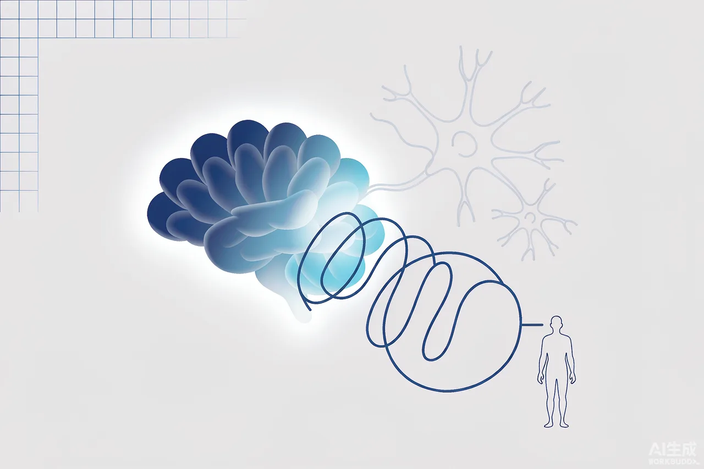

神经元与突触
介绍神经元的结构、静息电位与动作电位的产生机制，以及突触传递的过程。动作电位遵循“全或无”规律，信息主要通过轴突末梢释放的神经递质跨越突触间隙传递；兴奋性与抑制性输入的整合，决定神经元是否发放冲动，构成神经信息处理的基础。
基础心理学 · DISCIPLINE
Biological Psychology
从生理机制解释心理与行为
生理心理学研究心理与行为的生理基础，关注神经系统、内分泌系统与遗传因素如何调节心理活动。它探讨脑的结构与功能、神经元之间的信息传递以及神经递质的作用机制，并考察情绪、动机、记忆等现象的生物对应物。例如，人在紧张时心跳加快、手心出汗，是交感神经活动增强的表现；而长期作息紊乱会干扰昼夜节律并影响注意力。该学科为理解心身关系提供实证依据，强调心理现象具有可观察的生理基础，同时反对把复杂心理活动简单等同于生理过程，主张在多个层次上开展分析，以避免把复杂问题简单化。

这个分支主要研究什么
介绍神经元的结构、静息电位与动作电位的产生机制，以及突触传递的过程。动作电位遵循“全或无”规律，信息主要通过轴突末梢释放的神经递质跨越突触间隙传递；兴奋性与抑制性输入的整合，决定神经元是否发放冲动，构成神经信息处理的基础。
概述大脑皮层各脑叶及皮层下结构的功能分工。额叶参与计划与执行控制，颞叶与听觉和记忆相关，顶叶整合躯体感觉；皮层下的丘脑充当感觉信息的中继站，下丘脑则调节摄食、体温等基本功能。现代研究更强调脑区之间的网络协作。
阐述多巴胺、5-羟色胺、乙酰胆碱等递质系统的分布与功能。多巴胺与奖赏预期和动机密切相关，5-羟色胺参与情绪与冲动调节，乙酰胆碱在记忆与肌肉控制中发挥作用。需要注意，递质与心理功能之间并非简单的一一对应，而是复杂的调节关系。
探讨激素与神经系统的相互作用。面对压力时，下丘脑—垂体—肾上腺轴被激活，促使皮质醇分泌增加，短期内帮助机体动员能量；长期应激则可能与情绪和认知改变相关。褪黑素的分泌变化也参与调节睡眠—觉醒周期，体现内分泌对行为的节律性影响。
分析感觉器官的换能机制与运动指令的神经控制。视网膜把光信号转为神经冲动，耳蜗将声波转化为电信号；运动指令由皮层发出，经脊髓传至肌肉，小脑与基底节参与协调与校正。这些过程说明感知与行动都依赖精密的神经装置。
这一分支能带来什么
学习生理心理学能让你把情绪、注意与睡眠等日常体验同神经系统和内分泌的变化联系起来，理解紧张时心跳加快、熬夜后注意涣散背后的机制。这种多层次的视角有助于避免把心理现象简单归因于意志或性格，也为理解相关科学研究提供概念基础。
一项奠定了这个领域的研究
20世纪中叶，神经外科医生怀尔德·潘菲尔德在手术中对癫痫患者的大脑皮层进行电刺激，并询问患者的感受。他发现，刺激中央前回的不同部位会引发对侧身体特定部位的抽动，刺激中央后回则产生对应的躯体感觉，由此绘制出著名的“侏儒图”，即运动与感觉代表区按身体部位有序排列，且手与面部占据不成比例的大面积。这一研究为脑功能定位提供了直接的人体证据，也奠定了现代神经外科中功能保护区定位的基础。其方法受到伦理与个体差异的审视，但历史意义公认。
还没定论的问题，往往最值得追问
心理功能究竟由特定脑区独立承担，还是依赖分布式网络，一直是争论焦点。定位研究提供了明确证据，但损伤后功能恢复与成像显示的多区域协同表明，严格定位并不充分。当代研究多采用网络与系统的视角整合两种取向。
功能性脑成像常被通俗地解读为“某脑区负责某功能”，但反向推论需要谨慎：激活可能是结果而非原因，也可能受任务难度与统计阈值影响。学界提倡结合损伤研究、刺激技术与多方法验证，以避免过度解释。
把概念带回日常观察
连续几天在固定时间记录自己的入睡时刻、醒来时的清醒程度与上午的注意力状态，不刻意改变作息。之后对照记录，看看在自然光照与作息差异下，自己的精力高峰出现在何时。由此体会生物节律对日常状态的影响。仅作自我观察，不构成诊断。
怎么研究，用在哪里
进入这个分支的术语入口
与这一领域密切相关的名字
通过电刺激病人大脑皮层绘制功能定位图，揭示运动与感觉代表区的空间分布。
通过裂脑人研究揭示左右脑半球在语言与空间功能上的分工，推动脑功能侧化认识。
提出脑定位与整体活动原则并以动物实验研究记忆的脑机制，强调脑系统的整体组织。